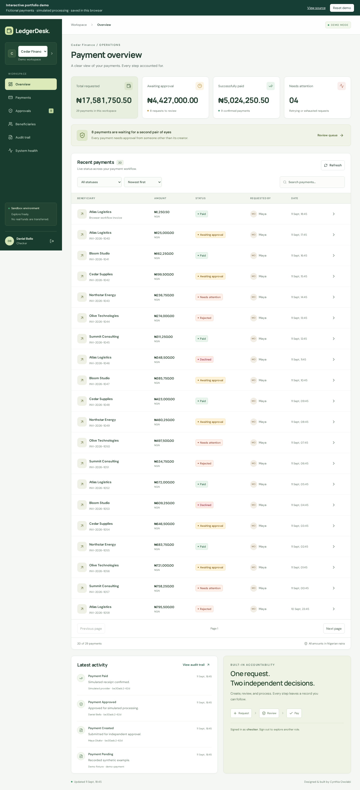

Cynthia Owolabi / Engineering case study
LedgerDesk

A provider can accept a payment and lose the response. Treating that timeout as a failure risks paying twice; treating it as success invents certainty.
Problem and constraints
LedgerDesk models an operations team creating, independently approving and tracking payments. The backend must preserve organization boundaries, survive worker crashes and keep an inspectable history. Its public preview is a synthetic browser demo; PostgreSQL workers and the HTTP provider run locally.
The central decision: preserve uncertainty
Approval commits the payment change, audit event and due job in one
PostgreSQL transaction. Workers claim with
FOR UPDATE SKIP LOCKED and perform network calls outside
the transaction. An ambiguous provider response moves the payment into
reconciliation.
- The provider accepts the transfer and persists its receipt.
- The response times out. The worker records an uncertain outcome.
- A subsequent worker looks up the original transfer before submitting again.
- An authoritative missing result permits another submit using the same provider idempotency key. An existing receipt confirms the original payment.
Why the boundaries matter
Blind retries cannot distinguish a lost response from a rejected payment. A local lease alone also cannot prevent an old worker from completing a remote call. LedgerDesk combines owner/version/expiry checks for local writes with stable provider idempotency keys for remote submission. It offers durable state and reconciliation, without claiming exactly-once network delivery.
Expired claims enter reconciliation even when the interrupted worker never recorded an outcome. Signed callbacks verify original request bytes and deduplicate event IDs; stale events cannot overwrite a terminal result.
Try the failure in two minutes
Open the demo and enter the operations workspace. Under System health, set Simulator behavior to the acceptance-timeout option. Open Approvals, select the pending Atlas Logistics payment (INV-2026-1040) and approve it. Its state moves through Confirming outcome to Paid, and its history shows the lookup. For actual network evidence, run the repository’s provider integration test using the installation guide below.
Evidence
- Provider restart test: HTTP acceptance timeout followed by restart reconciles to one durable transfer.
- Domain tests: concurrent claims, expired leases, stale completions, independent approval and transactional rollback.
- Trace continuity: approval, timeout and reconciliation retain a shared trace.
- Recorded query experiment: 20 rows from a 10,000-payment fixture in approximately 5.16 ms, returning 10,048 bytes. One warm local run; not a production capacity estimate.
Reproduce and inspect
Installation and PostgreSQL setup · Architecture and state transitions
Limits
The provider is a simulator with an independent receipt store. No real money moves. External mail and archive receivers are configurable but not provisioned. The public site demonstrates workflow; it does not operate a payment backend. Employer payment experience provides domain context, not benchmark results for this project.